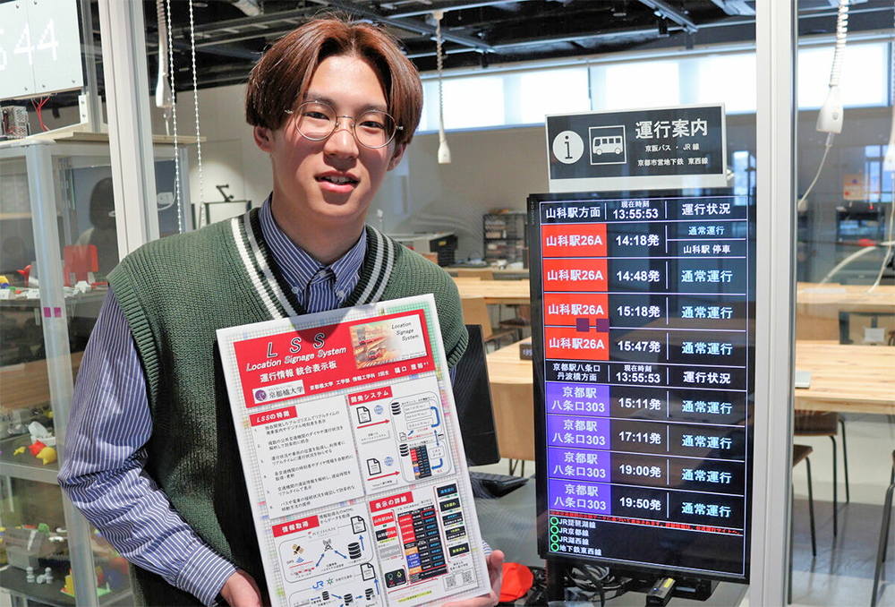

Location Signage System(LSS)運行情報表示板が京都新聞に掲載されました。
 このたび、私が開発した「LSS（Location Signage System）」が、2025年4月9日付の京都新聞夕刊に掲載されました。
LSSは、京都橘大学に乗り入れる京阪バスのダイヤや運行状況をリアルタイムで確認できる、電子掲示板型の情報提供システムです。
このシステムは、京都橘大学のアカデミックリンクス内にあるコモンズに設置されており、バスを利用する学生や教職員が、スムーズに帰宅経路を判断できるようサポートしています。
今回の新聞記事では、私がものづくりに興味を持ったきっかけや、高校・大学での活動についても紹介されました。さらに、この記事が新聞の1面(1ページ)に掲載されたことには私自身も驚いており、多くの方にこのシステムを知っていただける良い機会になったと感じています。
この掲載を通じて得られた経験は、今後の研究や活動の大きな励みになるとともに、より充実した大学生活につながると実感しています。
新聞掲載に関わった関係者の方々、大学で支えてくださっている方々には、感謝申し上げます。
- 京都新聞社『「こんなの作って」友人の頼みに応えたらみんなに恩恵 京都・山科のバス運行状況を「見える化」』, 京都新聞, 2025年4月9日, 夕刊1面.https://www.kyoto-np.co.jp/articles/-/1456041
- 新聞紙面原本※2次転載・利用禁止※https://www.tachibana-u.ac.jp/efd84f1324482d9cbbb3c626f5e5e9613da48760.pdf
- 京都橘大学 【情報工学科】3回生の樋口雅裕さんが京都新聞に掲載されましたhttps://www.tachibana-u.ac.jp/admission/faculty-contents/%e3%80%90%e6%83%85%e5%a0%b1%e5%b7%a5%e5%ad%a6%e7%a7%91%e3%80%913%e5%9b%9e%e7%94%9f%e3%81%ae%e6%a8%8b%e5%8f%a3%e9%9b%85%e8%a3%95%e3%81%95%e3%82%93%e3%81%8c%e4%ba%ac%e9%83%bd%e6%96%b0%e8%81%9e%e3%81%ab/
- Location Signage System(LSS)運行情報表示板についてhttps://hmasa2005.github.io/LSS.html